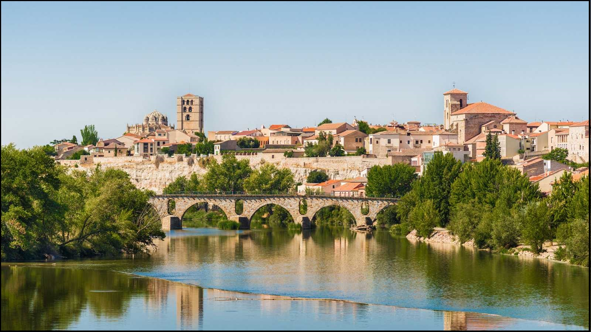
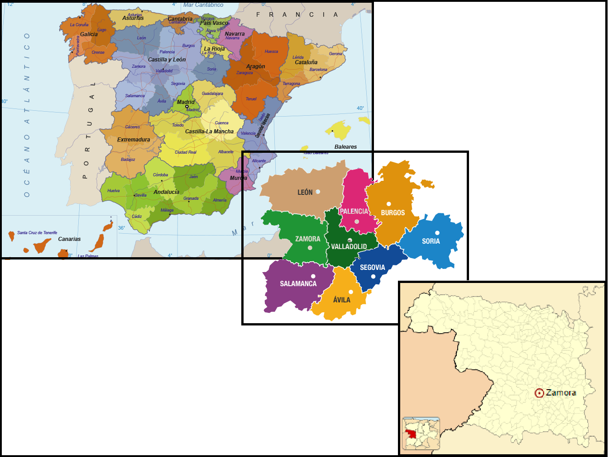
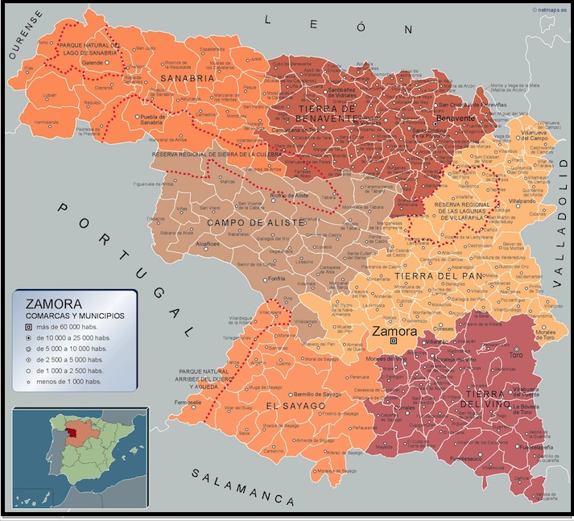

PROVINCIAS |
Localización Geografía Localidades Principales Historia Cultura Naturaleza Tradiciones Otros |
|---|---|
| Wikipedia Burgos Wikipedia León Wikipedia Palencia Wikipedia Salamanca Wikipedia Segovia Wikipedia Soria Wikipedia Valladolid |

Poesía "DELANTE DE LOS OJOS"“Puente de piedra, en Zamora, sobre las aguas del Duero. Puente para labriegos, carros, mulas con campanillas, niños brunos. Vieja piedra cansada de ver bajo tus arcos pasar el tiempo. Junto a la orilla, baten las aceñas, España de rotos sueños. Cuando el poniente pone sutil el aire y rojo el cielo, el puente se dibuja tersamente, y se oye gemir el Duero.” Blas de Otero (1916- 1979) Ir arriba Localización de Zamora La provincia de Zamora se encuentra en España, pertenece a la comunidad de Castilla y León. Ir arriba Geografía de ZamoraIr arriba Localidades Principales de ZamoraCitaremos algunas de las ciudades más representativas de cada comarca:
Ir arriba Historia de ZamoraIr arriba Cultura de ZamoraIncluyo un enlace para ver la guia de Cultura y Ocio disponible. Guía de Cultura y Ocio ZamoraIr arriba Naturaleza de ZamoraVídeo de Zamora Ir arriba Tradiciones de ZamoraIr arriba Otras cosas de ZamoraDejo en el enlace a varias pág. de interés sobre el turismo en Zamora, donde incluyen restaurantes, hoteles, rutas, etc. Ir arriba |